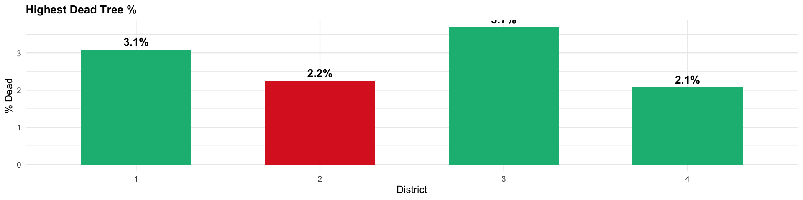
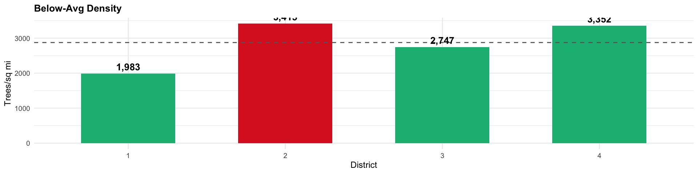

Visualizing and Maintaining the Green Canopy of NYC
Author
Akashdeep Singh
Task 1: Download NYC City Council District Boundaries
Show code
library(sf)library(tidyverse)library(httr2)get_nyc_council_districts <-function(){# URL for NYC City Council District Boundaries url <-"https://s-media.nyc.gov/agencies/dcp/assets/files/zip/data-tools/bytes/city-council/nycc_25c.zip"# Step 1: Create data/mp03 directory if neededif(!dir.exists(file.path("data", "mp03"))){dir.create(file.path("data", "mp03"), showWarnings=FALSE, recursive=TRUE) }# Define file paths zip_file <-file.path("data", "mp03", "nycc_25c.zip") extract_dir <-file.path("data", "mp03")# Step 2: Download zip file only if neededif(!file.exists(zip_file)){message("Downloading NYC City Council District boundaries...")download.file(url, zip_file, mode="wb") }# Step 3: Unzip only if needed# List files in zip to find the .shp file zip_contents <-unzip(zip_file, list=TRUE) shp_files <- zip_contents$Name[grepl("\\.shp$", zip_contents$Name)]if(length(shp_files) ==0){stop("No .shp file found in the zip archive") } shp_file <-file.path("data", "mp03", shp_files[1])if(!file.exists(shp_file)){message("Unzipping district boundaries...")unzip(zip_file, exdir=extract_dir) }# Step 4: Read the shapefile districts <-st_read(shp_file, quiet=TRUE)# Step 5: Transform to WGS 84 districts_wgs84 <-st_transform(districts, crs="WGS84")# Step 6: Return the transformed datareturn(districts_wgs84)}# Usage:nyc_districts <-get_nyc_council_districts()
ggplot() +geom_sf(data = nyc_districts, fill ="lightgray", color ="black", linewidth =0.5) +geom_sf(data = trees_transformed[1:20000, ], color ="darkgreen", alpha =0.3, size =0.5) +labs(title ="NYC Street Trees by Council District",subtitle ="20,000 trees") +theme_minimal()
# A tibble: 1 × 3
CounDist tree_count zip_city
<int> <int> <chr>
1 51 52728 Staten Island
The District with the most trees is the 51st district, which is located in Staten Island. this makes sense as Staten Island is often considered the most suburban borough
Question 2: Which district has highest density of trees?
# A tibble: 1 × 5
CounDist Shape_Area tree_count tree_density zip_city
<int> <dbl> <int> <dbl> <chr>
1 9 56263769. 8175 0.000145 New York
The district with the highest density count is district 9, in Manhattan. This is very interesting because Manhattan would seem to be the last place the highest density of trees would be in.
Question 3: Which district has highest fraction of dead trees?
Simple feature collection with 1 feature and 3 fields
Geometry type: POINT
Dimension: XY
Bounding box: xmin: -73.98334 ymin: 40.7405 xmax: -73.98334 ymax: 40.7405
Geodetic CRS: WGS 84
spc_common distance address geometry
1 Callery pear 33.75424 [m] 137 EAST 25 STREET POINT (-73.98334 40.7405)
The closest species of tree that is near Baruch College, is the Callery pear.
Task 5-NYC Parks Proposal
Park Proposal:
We propose a comprehensive tree health initiative for Manhattan’s District 2 to address the district’s critical tree mortality crisis. This program will plant 500 new street trees and remove all dead trees, with priority given to under-served corridors east of Second Avenue where tree coverage falls significantly below city standards. The initiative will focus on diversifying species composition by introducing climate-resilient varieties such as London Planetree and Red Oak, while reducing dependence on over represented species like Honeylocust.
District 2 faces a tree health emergency that demands immediate intervention. Our analysis reveals that District 2 has one of the highest percentages of dead trees among comparable Lower Manhattan districts. Furthermore, District 2’s tree density falls below neighboring districts despite having among the highest pedestrian traffic volumes. The eastern corridor particularly suffers, with streets having significantly fewer trees per block compared to recommended standards of 12-15 trees per block.
Scope: 133 dead trees removed + 500 new plantings = 633 total trees


Our district requires urgent intervention.
Tree Mortality Crisis: District 2 has the highest rate of dead trees among comparable districts.
The zoomed map reveals that tree health problems are concentrated in the eastern corridor of the district, particularly east of Second Avenue, where lower-income residents face the worst conditions. By removing 300+ dead trees and planting 500 new climate-resilient species, this program will restore District 2’s urban canopy to be more in line with neighboring districts, improve air quality, reduce urban heat effects, and eliminate safety hazards. The side-by-side comparison with District 1 demonstrates the stark disparity in tree health that this initiative will address.